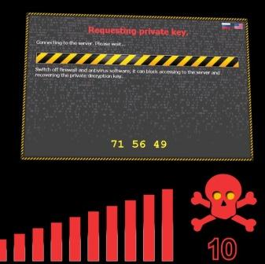

Ghid de inlaturare a virusului CTB-Locker
Acesta era titlul articolului de blog din vara trecuta care anunta CTB-Locker ca un nou mare pericol de securitate in online. In urma numeroaselor solicitari din ultimele doua luni (email, facebook sau retele sociale), am pus la punct un scurt ghid de inlaturare a virusului Critroni A (CTB Locker) si de decriptare a datelor personale furate
de acest ransomware relativ complicat.
Din momentul infectarii, utilizatorul este anuntat ca are 72 de ore la dispozitie pentru a efectua plata in bitcoins (mare atentie la sume, deseori apare o cerere de 0.4 BTC, 0.8 BTC, insa 1 BTC = 190 $), dupa care cheia privata va fi distrusa. In mod real, aceasta plata poate fi evitata, in cazul in care inlaturati suficient de repede virusul. Este foarte important sa incercati sa deconectati calculatorul de la retea indata ce apar semnele de infectare (mesajul tipic de pe ecran).
Iata, pe scurt, care sunt pasii pentru devirusare / dezactivarea virusului si decriptarea datelor personale (am descoperit dovezi de existenta a unor variante ale acestui malware care nu fac altceva decat sa schimbe extensia fisierelor, caz in care ele pot fi foarte usor recuperate):
[1] - Inchideti calculatorul, deconectati cablul de retea / dezactivati conexiunea wireless, iar apoi reporniti calculatorul.
[2] - Dupa semnalul de boot, apasati in mod repetat tasta F8 pentru a activa Safe Mode.
[3] - Odata logat in modul Safe, mergeti la Start, iar in bara de Search programs and files tastati regedit, apoi apasati Enter.
[4] - In editorul de registri, cautati in HKEY_CURRENT_USER\Software\Microsoft\Windows\CurrentVersion\Policies\Explorer\Run cheia de registru System Security, care de obicei are o valoare de tip C:\Users\<numele_utilizatorului>\AppData\Local\rmc-btc.exe
si stergeti-o.
[5] - Navigati apoi in folderul C:\Users\<numele_utilizatorului>\AppData\Local\
si stergeti toate executabilele care apar in lista. Restartati calculatorul, in modul normal si reconectati-l la retea, daca nu aveti un alt mijloc de a descarca solutii antivirus.
[6] - Descarcati, instalati si rulati ESET Rogue App Remover (32 bit) sau ESET Rogue App Remover (64 bit), in functie de tipul sistemului dumneavoastra de operare.
[7] - In caz ca nu reusiti cu ESET Rogue App Remover, incercati cu Microsoft Malicious Software Removal Tool sau MalwareBytes.
[8] - La final, daca aveti fisiere criptate, incercati recuperarea lor cu Panda Ransomware Decrypt.
Ghidul de mai sus functioneaza pentru Windows 7, dar procedura este asemanatoare si pe Windows XP sau Windows 8. Va reamintim ca, pentru a va proteja de amenintari de acest tip este indicat:
- sa instalati in browser un add-on de blocare a pop-upurilor, de tip AdBlock Plus - reduce riscul de infectare cu 90%.
- sa faceti backup documentelor deosebit de importante prin intermediul unei platforme de tip cloud storage: Google Drive, OneDrive, Dropbox, Copy, etc.
- sa folositi o solutie anti-virus / anti-malware in mod constant, pentru ca oricare dintre versiunile de Windows este vulnerabila in fata acestui tip de atac.
Pentru orice intrebari, va stam la dispozitie la adresa de mail helpdesk@iwannaweb.ro.
10 linkuri utile
Mai jos veţi găsi 10 linkuri utile, care sperăm să ţină loc de asistanţă de bază pentru diferite întrebări şi probleme de IT pe care le-aţi putea avea:Ultimele noutăţi...
În lumea IT nu există cel mai bun, ci există doar soluţii care se potrivesc cel mai bine nevoilor dumneavoastră.
Webdesign - creare de site-uri web, optimizare pentru motoarele de căutare - SEO, în Cluj şi judeţele învecinate. La o ţintă nouă, se cuvenea o interfaţă nouă.
Web design, creare site, optimizare site, dar şi asistenţă IT de tip HelpDesk, remote sau onsite, in Cluj sau judeţele vecine. Orice problemă IT aţi întâmpina, noi o putem rezolva!